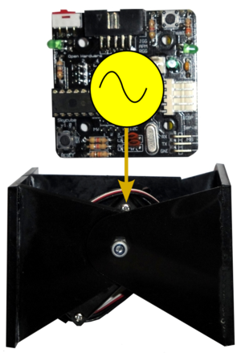
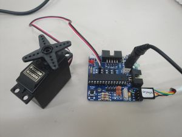
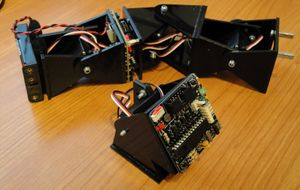
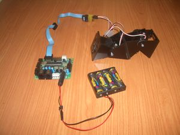
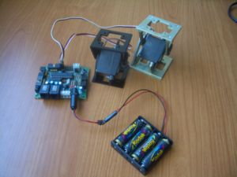

Contenido
[ocultar]Introducción
En la tesis doctoral "Robótica Modular y Locomoción: Aplicación a Robots Ápodos" propusimos un modelo de osciladores sinusoidales para la locomoción de robots modulares de tipo ápodo (gusanos y serpientes). En ella estudiamos los parámetros de los osciladores para conseguir los diferentes modos de caminar.
Este modelo de control genera movimientos muy suaves, pero lo más importante es que son necesarios muy pocos recursos para su implementación. Por ejemplo, se pueden usar microcontroladores de 8 bits, como los PICs o los AVR. La implementación de los osciladores en los microcontroladores la hemos denominado micro-osciladores.
Hasta ahora, todos los experimentos de locomoción de los robots ápodos (ver vídeos [1] y [2]) los hacíamos controlando las oscilaciones desde un PC. Ahora, con los micro-osciladores podemos hacer que los robots ápodos sean autónomos, y que se desplacen sin tener que estar conectados al PC.
Descarga
ArduSnake Library
| Se ha hecho una nueva versión de micro-osciladores compatible con Arduino. Es un proyecto aparte que tiene su propia página wiki |
Versión 0.4
| micro_osciladores_0.4.zip | Fuentes. Paquete con todo: Software para el PC, firmware para PIC y firmware para ATMEGA |
Versión: 0.3
| Fichero | Descripción |
|---|---|
| micro_osciladores_0.3.zip | Fuentes. Programas del PIC en C. Programas para el PC en python |
| sg-oscillator.hex | Ejecutable. Servidor de oscilaciones, para comunicarse desde el PC |
| test-oscillator8.hex | Ejecutable. Ejemplo de oscilación de 8 servos |
| test-P8.hex | Ejecutable. Ejemplo de movimiento de un robot del grupo cabeceo-cabeceo de 8 módulos. Probado con Cube Revolutions |
| test-PP1.hex | Ejecutable. Ejemplo de movimiento de la configuracion PP (Minicube-I). Se usa el pulsador de test para cambiar la dirección del movimiento: adelante/atras |
| test-PY8.hex | Ejecutable. Ejemplo de movimiento de robots del grupo cabeceo-viraje de 8 módulos. Solo se ejecuta un movimiento. Probado con Hypercube |
| test-hypercube.hex | Ejecutable. Secuencia de movimiento para Hypercube. Se alternan el movimiento recto, desplazamiento lateral y rotación |
| test-PYP1.hex | Ejecutable. Secuencia de movimiento para la configuración PYP (Minicube-II). Se cambia de movimiento al apretar el pulsador de la Skycube |
Versión: 0.2
| Fichero | Descripción |
|---|---|
| Micro_osciladores_0.2.tar.gz | Fuentes |
| Ej1-servos2-v0-2.hex | Ejemplo 1: Oscilación de dos servos (servos 1 y 2). Ejecutable para la Skypic |
| Ej-PP1-v0-2.hex | Ejemplo 2: Locomoción de Minicube-I (configuración PP). Ejecutable para la Skypic |
Versión: 0.1
| Fichero | Descripción |
|---|---|
| Micro_osciladores_0.1.tar.gz | Fuentes |
| Micro-oscillators-v0-1.hex | Ejecutable para descargar en una Skypic |
Evolución del proyecto
ArduSnake Library
- Migración al entorno de Arduino. El desarrollo se continúa en esta página del wiki: ArduSnake: Arduino Modular Snake Robots Library
- Migración a repositorio en github
Versión 0.4

- Añadido soporte para los micros ATMEGA. Pruebas con la tarjeta Skymega.
- Ejemplo de locomoción de la configuración mínima PP
- Ejemplo de oscilación de 8 servos
Versión 0.3

(Entrada en Blog)
Se ha probado con el SDCC 2.8.0
- Optimización del código
- Sólo se usa el timer 0 para implementar las señales PWM y el periodo de muestreo
- Se usa el periodo de muestreo mínimo posible: 20ms. Viene determinado por el servo Futaba 3003
- Las oscilaciones son independientes del número de módulos. Oscilan exactamente igual 2 módulos que 8 (en las versiones anteriores esto no era así)
- Código más compacto, simple y fácil de usar
- Control parcial de los osciladores desde el PC:
- Versión alfa del servidor sg-oscillator, que se comunica con el PC a 56700 baudios. Implementados los servicios de identificación, ping, habilitación/deshabilitación de servos, activación/desactivación de osciladores y posicionamiento de servos.
- Recepción de tramas mediante interrupciones
- Nuevo stargate Oscillator, implementado en python, para controlar los osciladores desde el PC
- Nuevos módulos oscillator-pn.c y oscillator-pyn.c, para la locomoción de robots modulares de topología de 1D de los grupos cabeceo-cabeceo y cabeceo-viraje
- Adaptación a la tarjeta Skyucube. Los ejemplos funcionan bien en una tarjeta Skypic o en la nueva Skycube 1.0
- Nuevos ejemplos:
- Movimiento del robot Cube Revolutions
- Movimiento del robot Hypercube
- Movimiento del robot Minicube-II
- Oscilación de módulos desde el PC
Versión 0.2

- Reestructuración del código. Creados los siguientes módulos:
- sin.c: Implementación de la función seno
- servos.c: Posicionamiento de los servos
- timer2.c: Generacion de pausas mediante el temporizador 2
- Ejemplos de utilización:
- ej1-servos2.c: Oscilación de los servos 1 y 2
- ej-PP1.c: Locomoción de Minicube-I. Se emplean los servos 3 y 4. El robot se mueve en linea recta. Cada vez que se aprite el pulsador S1 de la Skypic se cambia el sentido del movimiento
- Constantes definibles por el usuario:
- A: Amplitud de las oscilaciones. Rango: 0-90 grados
- FASE0: Fase inicial. Rango: 0-360 grados
- DF: Diferencia de fase entre dos módulos consecutivos. Rango: -180,180 grados
- OFFSET: Valor medio de la oscilación. Rango: -90,90 grados
- T: Periodo de la oscilación en segundos
- INC: Incremento de la fase con el tiempo. Rango: -180,180 grados
Versión 0.1

Implementación de los micro-osciladores para la tarjeta Skypic, usando el compilador SDCC versión 2.8.0. Como ejemplo se hacen oscilar dos Módulos Y1 con amplitudes de 45 grados, mismo periodo y diferencia de fase de 90 grados.
Debido a un bug en el SDCC 2.8.0 (y 2.9.0) con los números flotantes negativos, las funciones trigonométricas de la librería matemática no funcionan correctamente. Por ello hemos tenido que implementar nuestra propia función seno usando una tabla
Para probar la versión 0.1 en una skypic:
- Descargar el ejecutable en la Skypic: Micro-oscillators-v0-1.hex
- Conectar dos servos (o módulos Y1) a las posiciones 1 y 2 de la Skypic
- Empezarán a oscilar
Para compilar la versión 0.1:
- Descargar las fuentes: Micro_osciladores_0.1.tar.gz
- Descomprimir el paquete y entrar en el directorio micro_osciladores_0.1
- Usar alguno de los siguientes métodos:
- Ejecutar el siguiente comando en la linea de comandos:
$ sdcc -Wl-m -Wl-ainhx8m -mpic14 -p16f876a libm.lib -o micro-oscillators micro-oscillators.c
- También se puede compilar usando make o el Piklab
Vídeos
|
|
|
| Probando la versión 0.3. Movimiento del robot Minicube-II y control desde el PC Enlace al video en Youtube |
Probando la versión 0.2. Movimiento del robot Minicube-I Enlace al video en Youtube |


|
|
| Probando la versión 0.1. Oscilación de dos Módulos Y1 Enlace al video en Youtube |


Cambios
- 15/Feb/2012: Nueva ArduSnake Library. Micro-osciladores compatibles con Arduino. Es un proyecto independiente que se lleva a su propia página del wiki.
- 09/Feb/2012: Liberada versión 0.4
- 18/Enero/2010: Version 0.3
- Ejemplos de movimiento de Minicube-II, Cube Revolutions e Hypercube
- Control parcial de los osciladores desde el PC
- Probado en tarjeta Skycube
- 15/Abril/2009: Versión 0.2
- Ejemplo de movimiento del robot Minicube-I
- 08/Abril/2009: Versión 0.1
- Versión inicial
- Ejemplo de movimiento de dos módulos Y1
Repositorio
- Repositorio SVN: http://svn.iearobotics.com/micro_osciladores
Para obtener la última versión estable teclear:
svn co http://svn.iearobotics.com/micro_osciladores/micro_osciladores_0.4
Licencia
| |
| |
Autor
Noticias
- 27/Mayo/2010: Comenzada la migración a los micros ATmega168
- 18/Enero/2010: Liberada versión 0.3
- 8/Abril/2009: Comenzada esta página